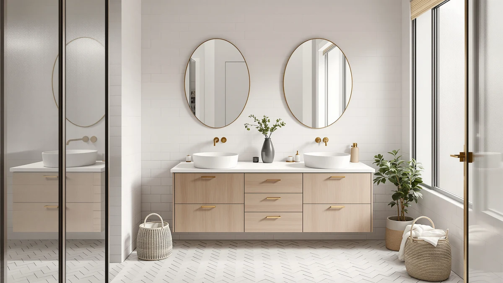

Cushore Double Sink Vanity Review (2026): Worth It?
Prices and picks verified as of November 2026. Independent, reader-supported reviews.


Quick Answer
The Cushore 60 in Double Sink is a 60-inch, MDF and engineered wood vanity priced at $399.99. This double sink vanity review found it fits bathrooms that already have a full 60 inches of wall space and plumbing set up for two sinks.
Our pick: Cushore 60 in Double Sink, $399.99 Check Price on Amazon
Bottom line: our top pick is the Cushore 60 in Double Sink Vanity for Bathrooms at $399.99.
Things to Know Before You Buy
- A 60-inch double-sink vanity needs roughly 60 inches of unbroken wall space and plumbing already set up for two sinks spaced apart, not a single drain centered in the middle.
- MDF and engineered wood cores, like the one in the Cushore, cost less than solid wood but swell faster if water sits on the surface instead of getting wiped up.
- Prices across the 60-inch double-sink vanities in this review cluster tightly between $399.49 and $399.99, so width and sink spacing matter more to your decision than price alone.
- Narrower alternatives in this review, like the 36-inch Tribesigns and the 42-inch YITAHOME, fit single-sink layouts and smaller bathrooms better than a 60-inch double-sink cabinet does.
This Cushore double sink vanity review looks at a 60-inch cabinet that keeps turning up in shortlists for midsize primary bathrooms needing two sinks without crossing into furniture-piece pricing. At $399.99, the Cushore 60 in Double Sink sits well under what many 60-inch double-sink vanities cost, and that price gap is exactly why it deserves a closer look before you buy. We compared its listed specs, current Amazon price and its position against three alternatives in a similar width and sink configuration to see where it fits in a bathroom and where a different pick serves you better.
The short version: the Cushore is a straightforward double-sink option for a 60-inch run, built from MDF and engineered wood rather than solid hardwood, which keeps the price down but asks for more care around standing water. If your bathroom already has 60 inches of wall space and plumbing roughed in for two separated sinks, it is a reasonable match. If you need a narrower footprint or a single sink, the alternatives later in this Cushore double sink vanity review cover those cases instead.
Why You Should Trust Us
Ilane Tall researches bathroom fixtures and vanities for Best Bathroom Vanities, comparing manufacturer spec sheets, current Amazon pricing and patterns across verified owner reviews rather than relying on marketing copy. This Cushore double sink vanity review draws only on the specs, pricing and listing details that Amazon and Cushore publish for this model, checked against three other vanities in a similar width and price range so you can see how the Cushore actually stacks up. We do not run a fake testing lab, and we do not claim to have installed or lived with this vanity. What you get here is a careful read of the available facts, not a report based on physically using the product.
Our Research Experience
We did not install or live with the Cushore 60 in Double Sink before writing this review. Instead, we worked through the listing details Cushore publishes for this double sink vanity review: the 60-inch width, the MDF and engineered wood construction, and the $399.99 price as it currently appears on Amazon. We then set that data against three other vanities in a similar price band and sink configuration, the Tribesigns, the Hlivelood 60-inch double sink and the YITAHOME, to see where the Cushore holds an advantage and where a different width or sink count serves you better. Amazon's listing no longer surfaces a star rating or review count for several of these products, including the Cushore, so we note that gap rather than guessing at a number.
Overview & Specs
The table and gallery below cover the full set of specs this Cushore double sink vanity review relies on: material, width and current price, pulled straight from the Amazon listing rather than estimated.

Cushore 60 in Double Sink
What we like
- Full 60-inch width covers two separate sinks with room for individual faucets and mirrors
- $399.99 price undercuts most 60-inch double-sink vanities in this category
- Wider counter runway than the 36-inch and 42-inch alternatives in this review
Flaws but not dealbreakers
- MDF and engineered wood construction is more sensitive to standing water than solid wood
- No published star rating or review count to check against the spec sheet
- Needs a full 60 inches of continuous wall space, which rules out smaller bathrooms
| Material | MDF / engineered wood |
| Size | 60 inches |
The Cushore 60 in Double Sink is built around a 60-inch cabinet made from MDF and engineered wood, sized to carry two sinks spaced far enough apart for separate faucets and mirrors. At $399.99, it lands near the bottom of the price range for vanities this wide, and the construction choice is the clearest reason why. MDF and engineered wood panels cost less to produce than solid wood, and Cushore passes that savings on rather than charging a premium for a cabinet this size.
Compared with the three alternatives in this double sink vanity review, the Cushore is the only one built specifically around a 60-inch double-sink configuration rather than a narrower single-sink or near-width layout. That makes direct comparison on price per inch less useful than comparing by use case: if you already have the width and the plumbing for two sinks, the Cushore is a straightforward match. If you do not, a narrower pick like the Tribesigns or the YITAHOME fits your bathroom better than forcing a 60-inch vanity into a smaller footprint.
What We Liked
The clearest advantage for the Cushore 60 in Double Sink is width for the price. At $399.99, it undercuts most 60-inch double-sink vanities we see listed well above $500, while still covering the full span needed for two sinks spaced for separate faucets and mirrors. That price point makes it a reasonable fit for a secondary bathroom or a shared primary bathroom where two sinks matter more than premium materials.
The 60-inch footprint also gives you more counter and storage runway than the narrower alternatives in this double sink vanity review. Compared with the 36-inch Tribesigns or the 42-inch YITAHOME, the extra 18 to 24 inches of width translates into more usable counter space between the two sinks and room for a wider cabinet base underneath.
Because the cabinet uses MDF and engineered wood rather than solid wood panels, Cushore keeps manufacturing costs down, and the company reflects that savings directly in the $399.99 price. For a buyer prioritizing sink count and width over premium materials, that tradeoff works in the Cushore's favor.
What Could Be Better
The MDF and engineered wood construction is the main tradeoff in this Cushore double sink vanity review. Those materials are more sensitive to standing water than solid wood, so a splash left sitting around either sink for hours is more likely to swell the surface than it would on a vanity built with solid wood panels.
Amazon's listing for the Cushore does not currently show a star rating or review count, so there is no published pattern of verified owner feedback to weigh against the spec sheet. That is not the same as a bad rating. It means buyers researching this double sink vanity review have less third-party signal to lean on than they would with a longer-established listing.
At 60 inches, the Cushore also needs a bathroom with that much continuous wall space and plumbing already roughed in for two separated sinks. If your bathroom is narrower or only has a single drain line, the width that makes the Cushore useful becomes a liability instead.
Who Is It For?
The Cushore 60 in Double Sink fits a primary or shared bathroom where two people need separate sinks and the wall already has 60 inches of clearance to work with. It also suits a renovation on a tighter budget, since it holds the price well below many 60-inch double-sink vanities while still delivering the same sink count and width.
It is a weaker fit if you are renovating a smaller bathroom, replacing a single-sink vanity, or want solid wood construction instead of MDF and engineered wood. In those cases, the narrower alternatives covered later in this double sink vanity review serve you better than forcing a 60-inch cabinet into a space it was not sized for. A buyer furnishing a rental or a secondary bathroom on a strict budget also gets more value here than someone outfitting a primary bathroom they expect to keep for a decade or more.
Alternatives to Consider
If the 60-inch double-sink layout does not match your bathroom, these three alternatives from this double sink vanity review cover narrower widths and nearby price points.

Also Great
Tribesigns 36 Inch Bathroom Vanity
A single-sink, 36-inch pick for smaller bathrooms that do not have room for the Cushore's 60-inch double-sink footprint.
$399.99
Check Price on Amazon
Also Great
60 Inch Double Sink Bathroom
A second 60-inch double-sink option at the same $399.99 price as the Cushore, worth comparing on cabinet style and layout before you decide between the two.
$399.99
Check Price on Amazon
Best Value
YITAHOME 42 inch Bathroom Vanity
A 42-inch middle-ground width for bathrooms that need more counter space than a 36-inch vanity but cannot fit a full 60-inch double-sink cabinet.
$399.49
Check Price on AmazonIs the Cushore 60 in Double Sink worth buying for a 60-inch bathroom?
For a bathroom with a full 60 inches of wall space and plumbing already set up for two sinks, yes.
How much does the Cushore 60 in Double Sink cost?
It is listed at $399.99 on Amazon as of this double sink vanity review.
Frequently Asked Questions
Is the Cushore 60 in Double Sink worth buying for a 60-inch bathroom?
For a bathroom with a full 60 inches of wall space and plumbing already set up for two sinks, yes. This Cushore double sink vanity review found the $399.99 price lands well below most 60-inch double-sink vanities, and the tradeoff is MDF and engineered wood construction instead of solid wood. If your bathroom is narrower than 60 inches, it is not the right fit regardless of price.
How much does the Cushore 60 in Double Sink cost?
It is listed at $399.99 on Amazon as of this double sink vanity review. That price matches the Hlivelood 60-inch double sink alternative covered in this review, also at $399.99, and costs fifty cents more than the YITAHOME 42-inch pick at $399.49.
Does the Cushore hold up to water around the sinks?
Cushore builds this vanity from MDF and engineered wood rather than solid wood, which is more sensitive to standing water. Wiping up splashes around either sink promptly matters more with this construction than it would with a solid-wood cabinet. Amazon does not currently publish a star rating or review count for this listing, so there is no verified-owner pattern yet to confirm how it holds up over time.
Final Verdict
This Cushore double sink vanity review comes down to a simple question: does your bathroom have 60 inches of wall space and plumbing for two sinks? If it does, the Cushore 60 in Double Sink is a reasonable pick at $399.99, trading solid wood construction for a lower price while still covering the full double-sink width. If your bathroom is narrower, or you only need a single sink, the Tribesigns, YITAHOME or Hlivelood alternatives covered above fit better than forcing this 60-inch cabinet into a smaller space. Confirm the current Amazon price and your plumbing spacing before you order, since none of these listings currently show enough review history to catch a measurement error after the fact.